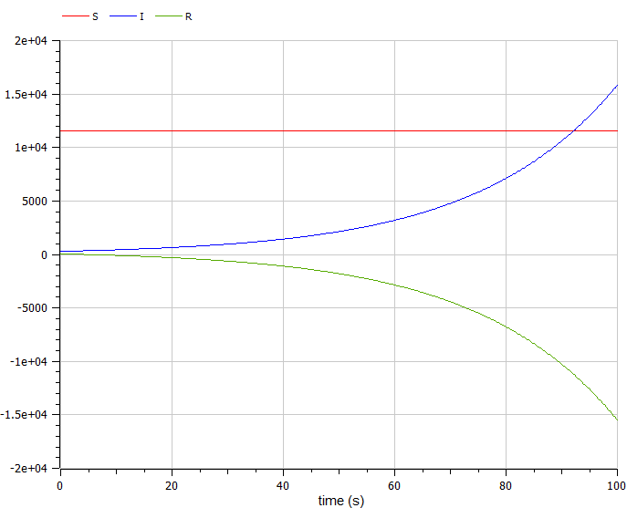
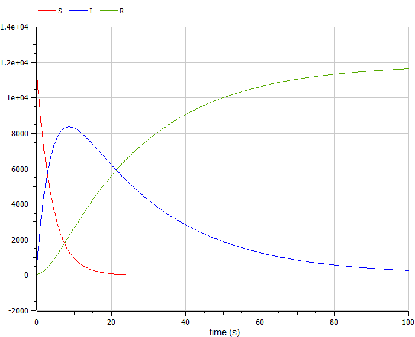

Title: Модель эпидемии SIR Author: Алламе Ормиз
Institute:Российский Университет Дружбы Народов
Date: 10 марта, 2024, Москва, Россия
Изучить модель эпидемии $SIR$
Предположим, что некая популяция, состоящая из $N$ особей, подразделяется на три группы. Первая группа - это восприимчивые к болезни, но пока здоровые особи - $S(t)$. Вторая группа – это число инфицированных особей, которые также являются распространителями инфекции - $I(t)$. А третья группа $R(t)$ – это здоровые особи с иммунитетом к болезни. До того, как число заболевших не превышает критического значения $I^$, считаем, что все больные изолированы и не заражают здоровых. Когда $I(t)> I^$, тогда инфицирование способны заражать восприимчивых к болезни особей.
Cкорость изменения числа $S(t)$ меняется по следующему закону:
$$ \frac{dS}{dt}= \begin{cases} -\alpha S &\text{,если $I(t) >
I^$} \
0 &\text{,если $I(t) \leq I^$} \end{cases} $$
Cкорость изменения числа инфекционных особей:
$$ \frac{dI}{dt}= \begin{cases} \alpha S -\beta I &\text{,если
$I(t) > I^$} \
-\beta I &\text{,если $I(t) \leq I^$} \end{cases} $$
Cкорость изменения выздоравливающих особей:
$$\frac{dR}{dt} = \beta I$$
Постоянные пропорциональности $\alpha, \beta$ - это коэффициенты заболеваемости и выздоровления соответственно.
Для анализа картины протекания эпидемии необходимо рассмотреть два случая: $I(0) \leq I^$ и $I(0)>I^$
На одном острове вспыхнула эпидемия. Известно, что из всех проживающих на острове $N=11900$ в момент начала эпидемии $(t=0)$ число заболевших людей (являющихся распространителями инфекции) $I(0)=290$, А число здоровых людей с иммунитетом к болезни $R(0)=52$. Таким образом, число людей восприимчивых к болезни, но пока здоровых, в начальный момент времени $S(0)=N-I(0)-R(0)$. Постройте графики изменения числа особей в каждой из трех групп.
Рассмотрите, как будет протекать эпидемия в случае:
{ #fig:001 width=70% height=70% }
{ #fig:002 width=70% height=70% }
В ходе выполнения лабораторной работы была изучена модель $SIR$ и построены графики.